01 / RODZINY
Dzieci i rodziny
Rzeczy codziennego użytku, żywność, przybory szkolne i chwile zwyczajnej radości.
Jesteśmy małym zespołem, który słucha, organizuje i osobiście dowozi pomoc. Jedziemy do ludzi — także tam, dokąd trudno dotrzeć.


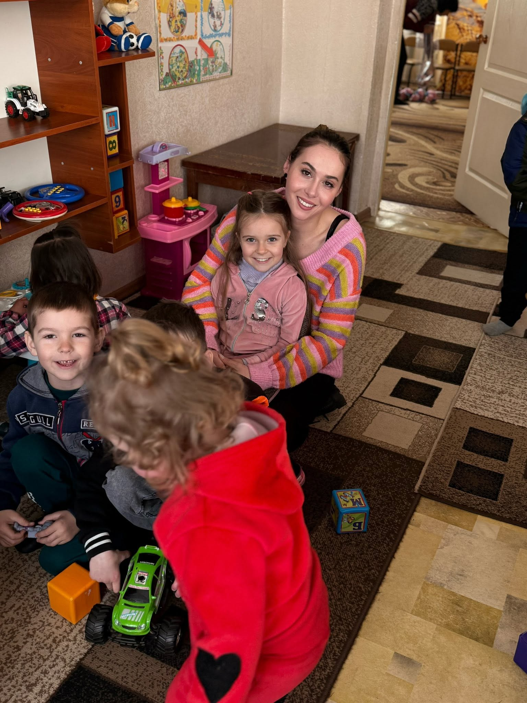
Szaliki to stowarzyszenie non profit i ludzie, którzy od początku pełnoskalowej wojny organizują pomoc humanitarną dla Ukrainy. Rozmawiamy z osobami na miejscu, pytamy, czego naprawdę potrzeba, a potem pakujemy samochód i jedziemy.
Nie opowiadamy o wojnie z daleka. Opowiadamy o spotkaniach, codzienności i małych gestach, które pomagają przetrwać trudny dzień.
Poznaj nasze historie →Pomoc dopasowujemy do ludzi i sytuacji. Najpierw rozmawiamy, potem działamy.
Rzeczy codziennego użytku, żywność, przybory szkolne i chwile zwyczajnej radości.

Wsparcie dla osób starszych i niewidomych, dopasowane do ich potrzeb.
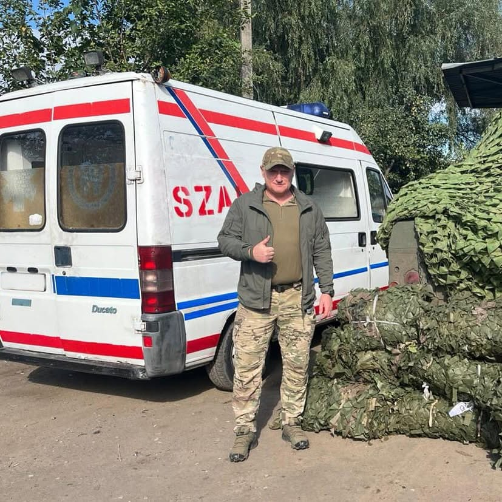
Kupiliśmy już dwie karetki, a łącznie zawieźliśmy do Ukrainy trzy ambulanse.

Przekazujemy potrzebne wsparcie osobom służącym w Ukrainie.
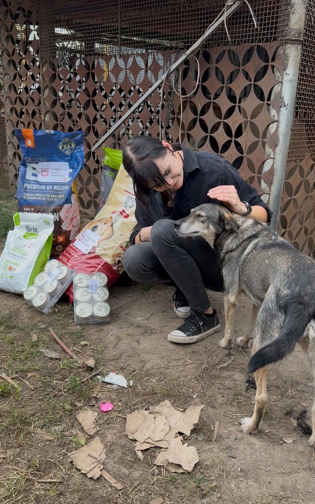
Karma i wsparcie dla osób, które mimo wojny opiekują się swoimi zwierzętami.
Identyfikujemy się z pomocą humanitarną i pozostajemy przy jej podstawowym celu: ratowaniu życia i łagodzeniu cierpienia. Wspieramy także żołnierzy, bo chronią i ewakuują cywilów.
Ta relacja działa w obie strony. Żołnierze pomagają nam dotrzeć z pomocą do ludzi, a my wspieramy ich w działaniach, które służą ochronie życia. Wspólnym mianownikiem jest troska o ludzi i ich bezpieczeństwo.


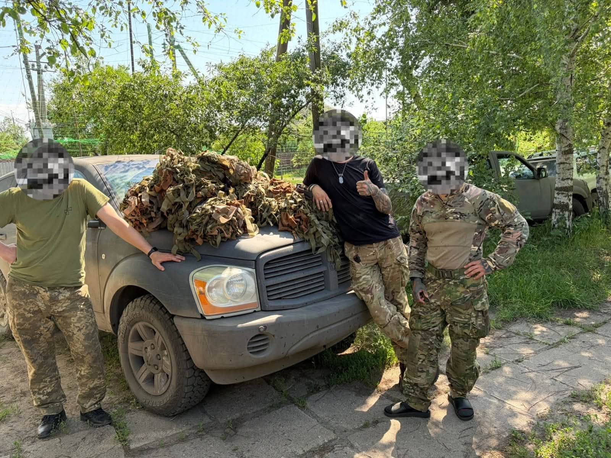
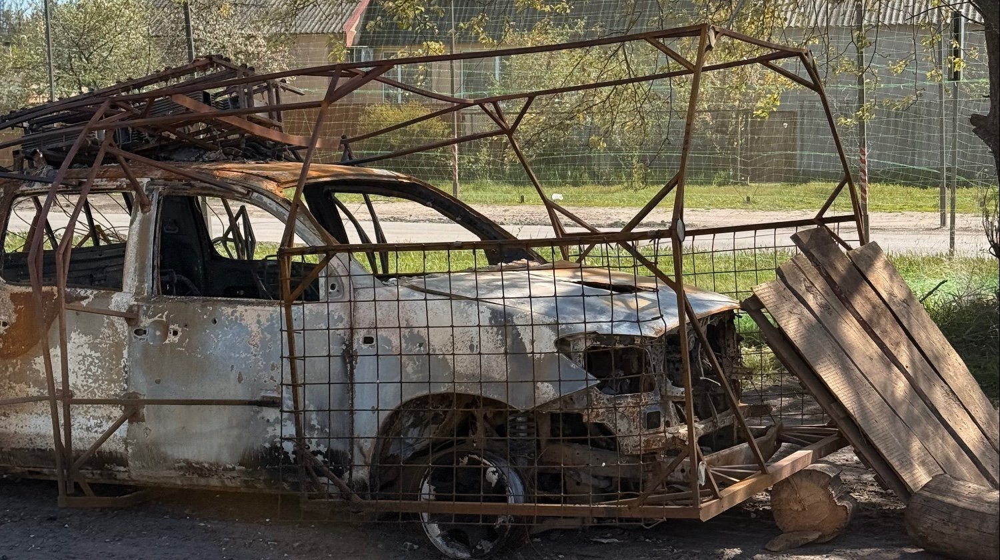
Nie na wszystko da się przygotować. Gdy wybuchy rozlegają się blisko, trudno zachować zimną krew — znamy to z własnego doświadczenia. Spróbuj wtedy nie dać się sparaliżować strachowi i skupić na jednym kroku: dotrzeć do bezpiecznego miejsca.
Najpierw kieruj się lokalnymi komunikatami i wybierz wskazane, sprawdzone schronienie. Jeśli nie możesz do niego dotrzeć, szukaj solidnego, nieuszkodzonego budynku i pomieszczenia bez okien. Może to być odpowiednia piwnica; jeśli nie ma do niej bezpiecznego dostępu, wybierz miejsce, w którym oddzielają cię od przestrzeni zewnętrznej co najmniej dwie solidne ściany. To rozwiązanie awaryjne: nie zastępuje schronienia i nie gwarantuje ochrony przy bezpośrednim trafieniu.
Przygotowanie pomaga, ale w najtrudniejszej chwili spróbuj skupić się na najbliższym bezpiecznym kroku.
Poradnik bezpieczeństwa →Zdjęcia z wyjazdów, dostaw i chwil, które składają się na codzienność działań Szalików.


O naszych działaniach opowiadamy także poza trasą. Publikacje i relacje znajdziesz na profilach Szalików.
Zobacz publikacje ↗
Wspólna zabawa, słodycze, zeszyty i czas spędzony razem.

Najpierw słuchamy. Później wspólnie szukamy sposobu, by pomóc.

Darowizny, pakowanie i praca wolontariuszy składają się na wspólny wysiłek.
Za każdą drogą stoją ludzie i organizacje, które od lat wspierają wspólny wysiłek.

Niemiecki Czerwony Krzyż wspiera nas od samego początku naszych działań. Ta współpraca pomaga nam docierać z pomocą tam, gdzie jest potrzebna.
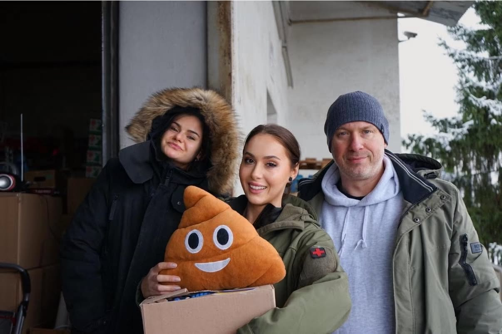
To nasz najbliższy partner. Łączą nas podobne wartości, uważność na potrzeby ludzi i przekonanie, że skuteczna pomoc zaczyna się od współpracy.
Chcesz wesprzeć nasze działania jako partner? Porozmawiajmy.
Powstała z inicjatywy wolontariuszki Katarzyny Kubanek, działającej wcześniej w Szalikach. Dobrze widzieć, jak z dobra rodzi się kolejne dobro.
Kilka razy wsparł nas dużymi zakupami, dzięki którym mogliśmy przygotować potrzebne rzeczy i przekazać je dalej.
Naprawił naszego „Szalikowego czołga” — samochód, bez którego nie docieralibyśmy tam, gdzie pomoc jest szczególnie potrzebna.
Dzięki pani Elenie i wspólnym wartościom docieramy z pomocą aż na sam front. Łączy nas troska o ludzi.
Z całego serca dziękujemy tym partnerom oraz wielu innym niesamowitym ludziom i organizacjom. Wasze zaufanie, życzliwość i konkretne wsparcie są częścią każdej drogi, którą możemy wspólnie pokonać.
Wpłata wspiera paliwo, organizację i dostarczanie pomocy.
Wybierz bezpieczną dla siebie formę wsparcia.
Tytuł przelewu: Darowizna na cele statutowe
Działamy non profit, więc każda złotówka to realna pomoc. Dziękujemy za Twoje wsparcie.
Proste objaśnienia pojęć z relacji i działań humanitarnych. Bez wojskowego żargonu tam, gdzie nie jest potrzebny.
Otwórz rozszerzony słownik →


Punkt Niezłomności (ukr. пункт незламності) w Charkowie był miejscem, do którego można było przyjść, zjeść gorącą zupę i się ogrzać.
Podczas zimowych ataków Rosji na infrastrukturę energetyczną wiele osób zostawało bez ogrzewania, gdy temperatura spadała do prawie −30°C. Wspólnie z Caritas Spes Kharkiv gotowaliśmy zupy i przyjmowaliśmy tych, którzy potrzebowali ciepłego posiłku oraz chwili w bezpiecznym miejscu.
To miejsce bywa nazywane hospicjum, ale mieszkające tam osoby nie lubią tego określenia. Dla nich to po prostu dom — miejsce, w którym żyją.
Prowadzą je wolontariusze, którzy są blisko mieszkańców i ich codziennych potrzeb. Przyjeżdżamy tam z pomocą i spotykamy ludzi, dla których ważne jest nie tylko wsparcie, ale też poczucie, że są u siebie.


Wspieramy placówki medyczne położone blisko linii frontu, przekazując potrzebne materiały i pomoc. Docieramy również do podziemnych szpitali na samej linii frontu.
Za każdym takim miejscem stoją ludzie, którzy każdego dnia opiekują się pacjentami w trudnych warunkach.
Jesteśmy ekipą, która dużo się śmieje, żartuje i czasem wygłupia. To pomaga nam być razem i nieść pomoc. Ale w niebezpiecznych miejscach — zwłaszcza w skrajnych chwilach — trzeba zachować czujność i panować nad sobą.
Na wojnie giną ludzie. Dlatego uważnie obserwujemy otoczenie, słuchamy osób znających sytuację na miejscu i nie lekceważymy zagrożeń. Opanowanie pomaga chronić siebie, zespół i ludzi, do których jedziemy.


Wojna nie układa się w opowieść z wyraźnym końcem. Zniszczenie i żałoba przeplatają się z uporem, żeby wstać kolejnego dnia, zaparzyć herbatę, zadzwonić do bliskich. Nadzieja nie unieważnia tragedii. Czasem jest tylko tym, że ludzie mimo wszystko nie przestają być dla siebie.
Nam też bywa ciężko. Ale po wyjeździe możemy wrócić do domu. Dla ludzi, których spotykamy, te ulice i mieszkania są domem — także wtedy, gdy są uszkodzone, niebezpieczne albo nie ma w nich już tego, co dawało poczucie bezpieczeństwa. Ta myśl zostaje z nami na długo po powrocie.
Nie chcemy mówić w ich imieniu. Możemy przyjechać, wysłuchać i być obok. A potem wrócić z pomocą.


Na wyjazdach szybko blednie to, co na co dzień wydaje się ważne. Najnowszy telefon, designerska torebka, idealny makijaż czy imponująca sylwetka nie mówią, czy można na kimś polegać.
Poznaje się człowieka po tym, czy zauważa cudze zmęczenie, umie wysłuchać, poda rękę i zostanie obok, kiedy brakuje słów. W takich chwilach rodzą się przyjaźnie, głębokie więzi, a czasem także miłość. Nie trzeba jej nazywać ani wystawiać na pokaz, żeby była prawdziwa.
Wracamy z wdzięcznością za ludzi, przy których można być sobą — bez pozy i udawania, że zawsze jest się silnym. Ostatecznie liczy się nie wygląd, lecz serce.
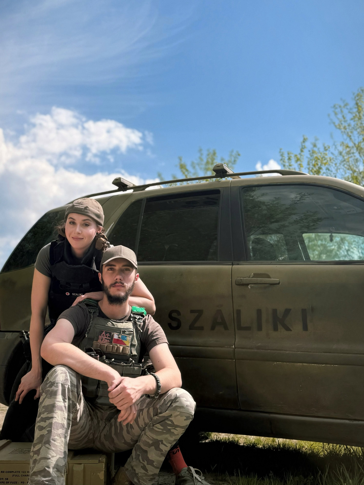

Na początku wojny o tym, co działo się w Przemyślu i przy granicy, opowiadały redakcje z różnych krajów. Później pojawiły się publikacje poświęcone bezpośrednio Szalikom i ludziom tworzącym tę pomoc.
BBC Newsnight relacjonowało z polsko-ukraińskiej granicy i dworca w Przemyślu, gdzie spotykali się uchodźcy i wolontariusze.
Obejrzyj materiał BBC ↗Japonia · Nippon TVJapońska telewizja opowiedziała o pracy wolontariuszy pomagających osobom uciekającym przed wojną.
Obejrzyj reportaż ↗YouTube · ŻycioRysyStanisław Rudowicz opowiada o doświadczeniu wolontariatu i pracy zespołu.
Obejrzyj rozmowę ↗Niemcy · Schwäbische PostRozmowa z Sarah-Johanną Hamerą o pomocy na granicy, pierwszych wyjazdach i ludziach, którym dostarczano wsparcie.
Czytaj artykuł ↗Międzynarodowo · IFESPublikacja opisuje, jak partnerzy z Niemiec i innych krajów połączyli siły, by organizować pomoc i dostawy z udziałem Szalików.
Czytaj publikację ↗Irlandia · RTÉMateriał o Polsce jako bliskim sojuszniku Ukrainy opowiada również o powstaniu Szalików i pomocy na granicy.
Czytaj artykuł ↗Polska · Tarnowskie Góry InfoRozmowa o misjach, strachu i radości z prostych gestów.
Czytaj rozmowę ↗Polska · GwarekReportaż o Szalikach, zespole i osobistym dowożeniu pomocy ludziom w Ukrainie.
Czytaj reportaż ↗Rozmowa o wojnie, pomocy humanitarnej i sile solidarności — z perspektywy osób, które tę pomoc dowożą.
Słuchaj odcinka ↗Opis i publikacja w Mediatece ↗W studiu rozmawiałyśmy o naszej pracy i pomocy humanitarnej. Przy zdjęciu pozostawiamy odnośnik do publikacji Szalików.
Zobacz relacje i publikacje ↗Radio ESKA — podcast o działaniach · TVP Katowice — rozmowa na żywo w studiu.
Materiały audio i wideo dodamy, gdy będziemy mieć dostęp do archiwalnych nagrań.
Na zdjęciach widać siatki przeciwdronowe, nasz samochód i zniszczone domy oraz bloki.
Tu ktoś wracał po pracy, karmił dziecko, układał klocki. Ktoś szykował się na randkę, ktoś odrabiał lekcje. Dziś zostały wybite okna, rozerwane ściany i gruz. To były czyjeś domy.


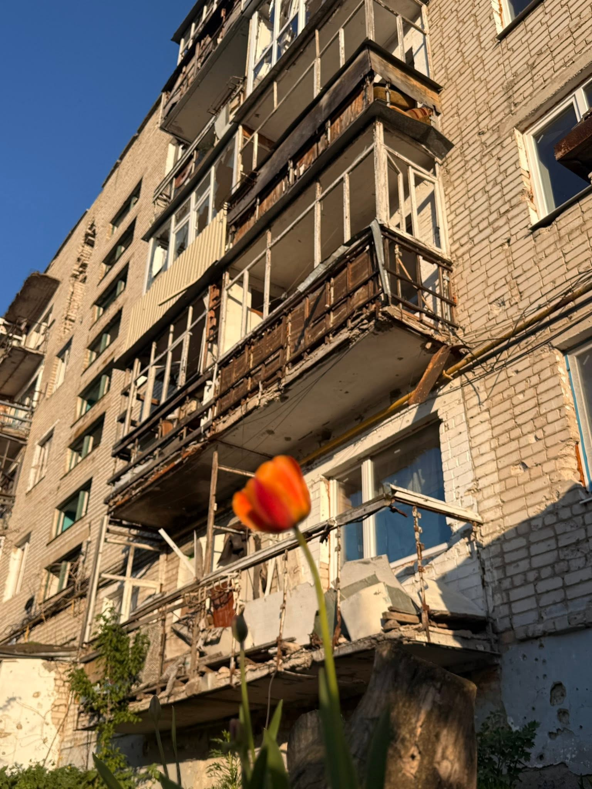

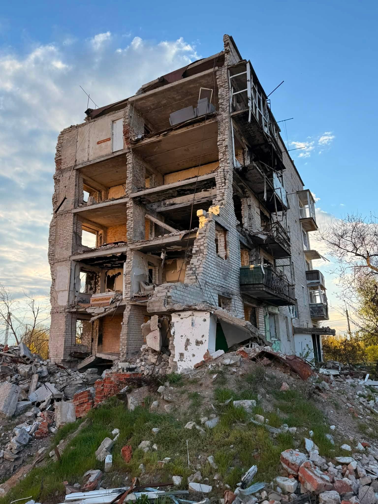
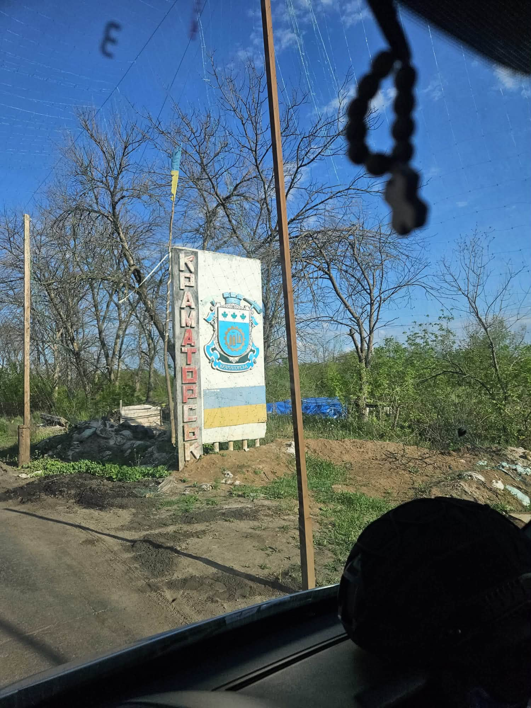
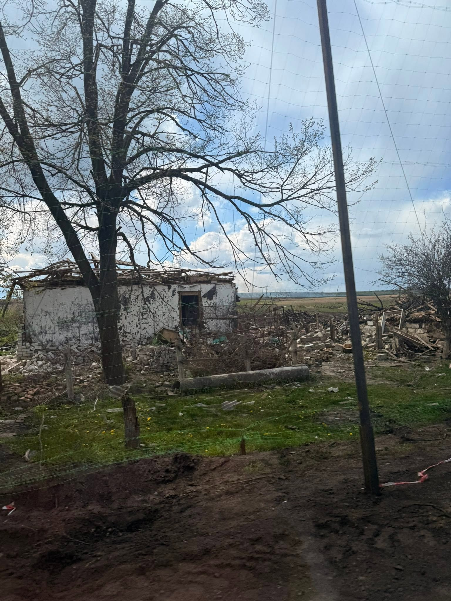
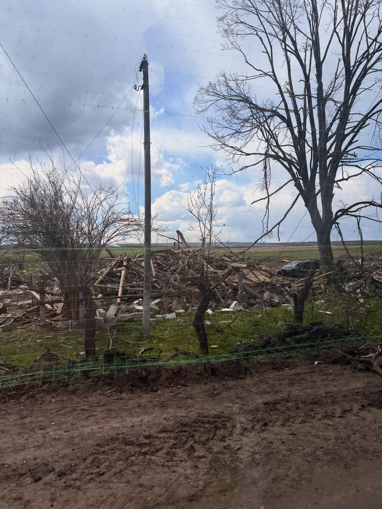

Podczas jednego z wyjazdów dwa rosyjskie drony nas szukały — polowały na nas. Schowaliśmy się w zaroślach i czekaliśmy, aż niebezpieczeństwo minie. Bywało, że naprawdę niewiele dzieliło nas od tragedii.
Mieszkanka Chersonia opisała takie zagrożenie jako „human safari” — polowanie na ludzi z użyciem dronów. To określenie z relacji cywilów, nie figura retoryczna.
Konwencje genewskie i prawo humanitarne mają chronić cywilów. Tymczasem ONZ dokumentowała rosyjskie ataki w zaludnionych obszarach, które naruszały zasady tego prawa (ustalenia Niezależnej Komisji Śledczej ONZ ds. Ukrainy ↗). Nie wolno nam udawać, że to odległy problem.
Nie opowiadamy o tym, by robić z ryzyka bohaterstwo. Chcemy uczciwie pokazać, jak wyglądają nasze wyjazdy: trudne warunki, mało snu, prowizoryczne miejsca odpoczynku i stała konieczność uważania na siebie i innych. To nie jest camping ani wycieczka.
Nasza grupa jest zgrana, bo znamy swoje mocne strony, słabości i granice. Bezpieczeństwo wszystkich zależy od zaufania, szczerości i odpowiedzialności za siebie nawzajem. To wymaga także odsłonięcia się i powiedzenia wprost, kiedy coś przekracza nasze możliwości.
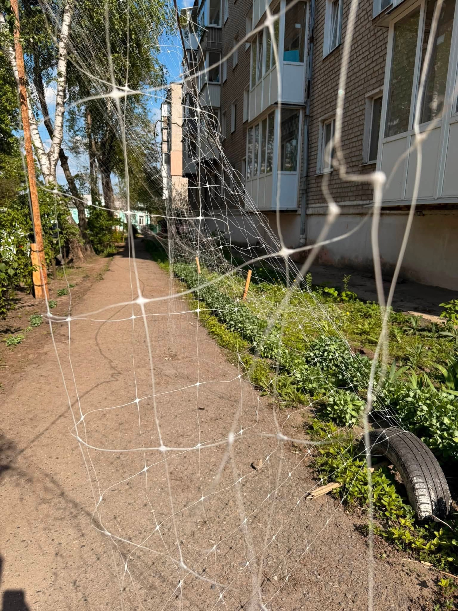

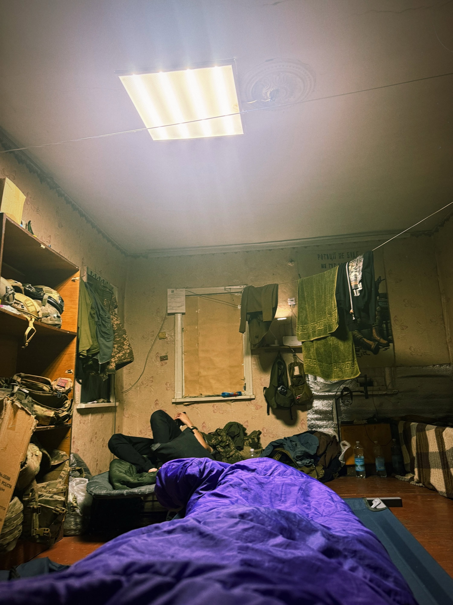

Dowoziłyśmy karmę w miejsca, do których trudno i niebezpiecznie dotrzeć. Pomagałyśmy ewakuować zwierzęta, a niektórym znalazłyśmy domy adopcyjne w Polsce.
Zwierzęta z Kramatorska, które widać na zdjęciach, są już bezpiecznie wywiezione. Fotografia z kotem i kaskiem powstała we wsi pod Charkowem.
Możesz wesprzeć tę pomoc wpłatą albo przekazać karmę. Napisz do nas — ustalimy, czego aktualnie potrzeba i jak ją dostarczyć.

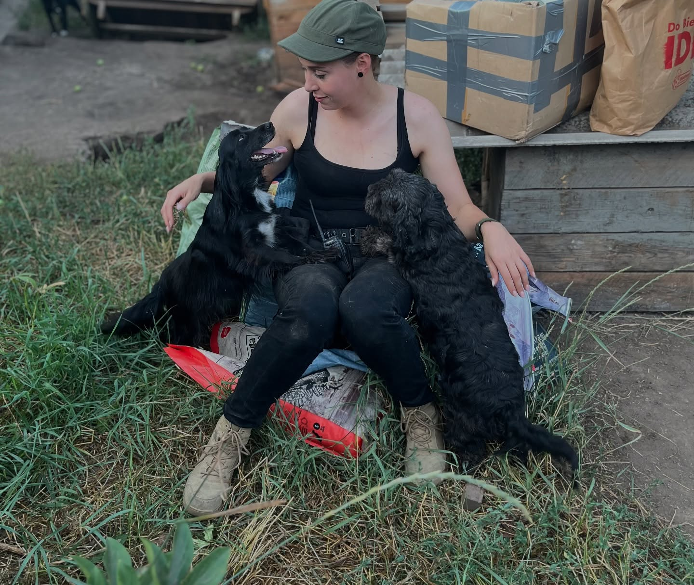
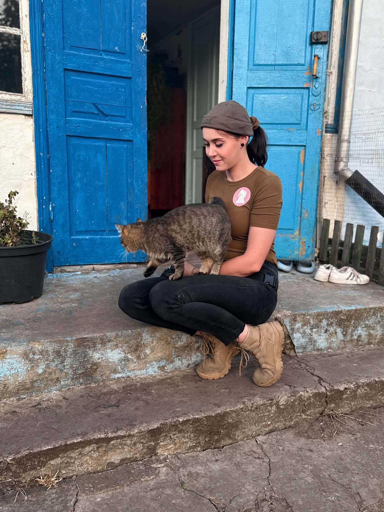


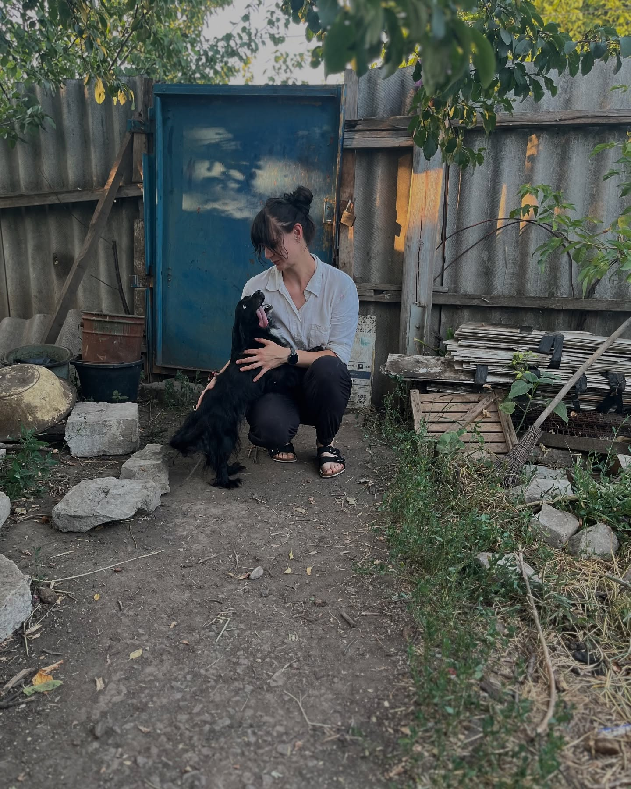
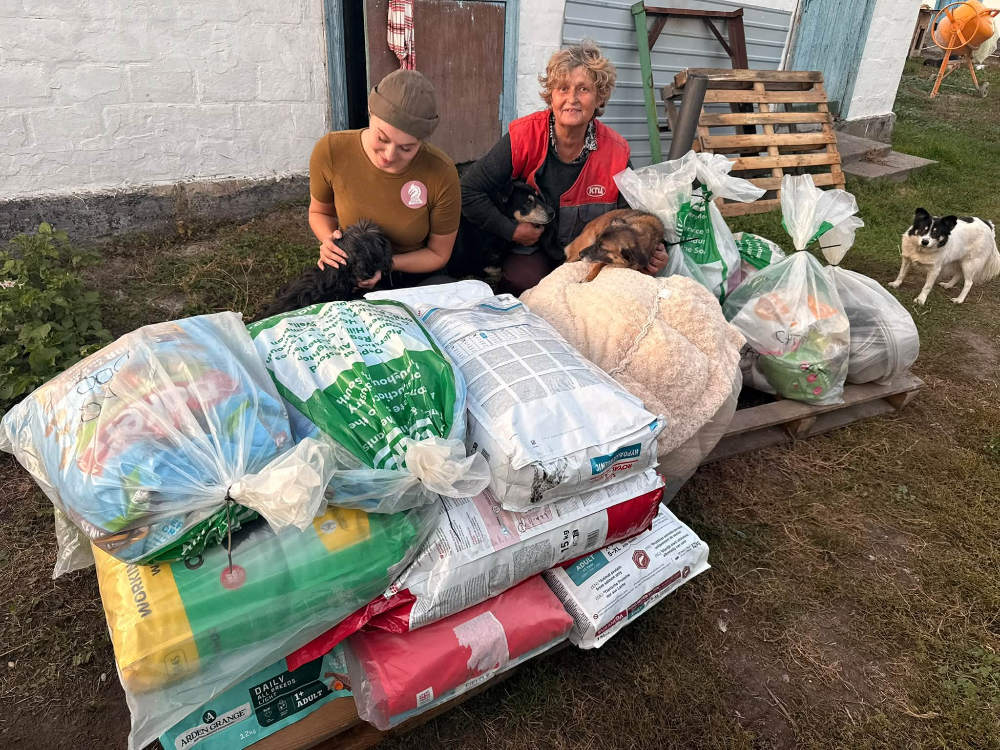
Kiedy Polskę dotknęła powódź, byliśmy jednymi z pierwszych, którzy ruszyli ze wsparciem. Wracaliśmy tam z pomocą humanitarną kilkukrotnie. Wspieramy też schroniska i lokalne akcje, również te kierowane do osób ubogich. Pomagamy tam, gdzie możemy być potrzebni — w Ukrainie i w Polsce.